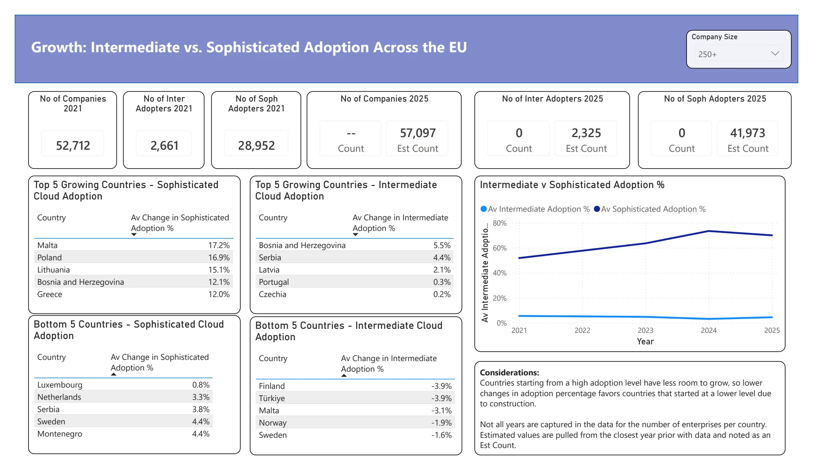

A flipped ranking
An early formula divided where it should have multiplied. Every chart pointed the wrong way until the counts stopped making sense next to the rates.
Case study · Power BI
A ranking by today's levels puts the Nordic countries on top. I wanted to know where adoption is moving, so I rebuilt the view around change since 2021.

Among large firms, the biggest gains in sophisticated cloud services came from Malta, Poland, Lithuania, Hungary, and Croatia. Sweden and Luxembourg barely moved.
The leaders are close to saturation. The growth is in central and eastern Europe.
Four spots where this data tried to trip me up, and what I did about each one.
An early formula divided where it should have multiplied. Every chart pointed the wrong way until the counts stopped making sense next to the rates.
Combined rates are weighted by firm count. A plain average of the two size bands overstated some countries by seven points.
Eurostat's intermediate tier means "at most" intermediate. A falling share there is firms moving up, not dropping out.
2025 firm counts aren't published yet. I carried 2024 forward, tested the error on earlier years, and flagged every estimated point.
Countries that started near 80% can't gain 30 points, so low starters will always look like bigger movers. The data also excludes agriculture, mining, and the financial sector.